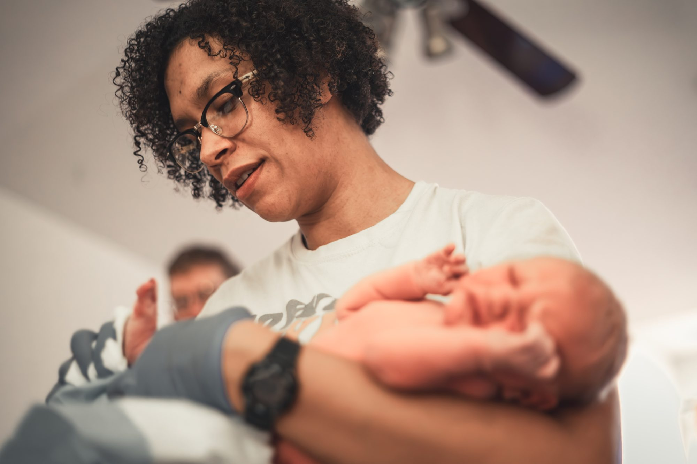
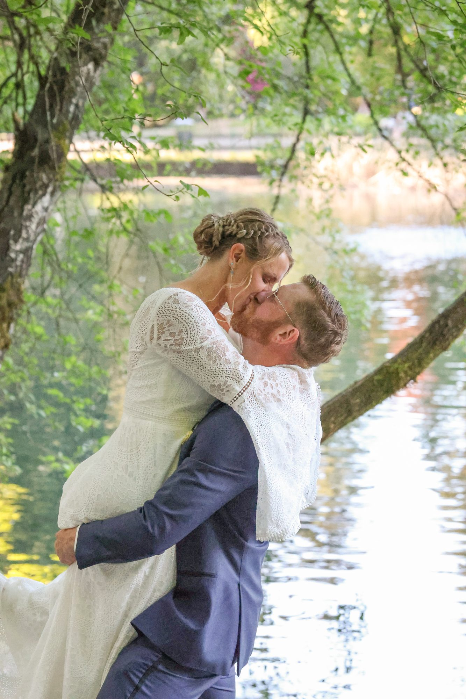
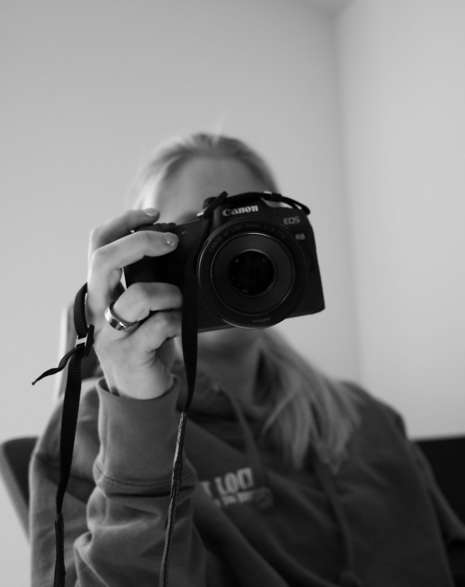
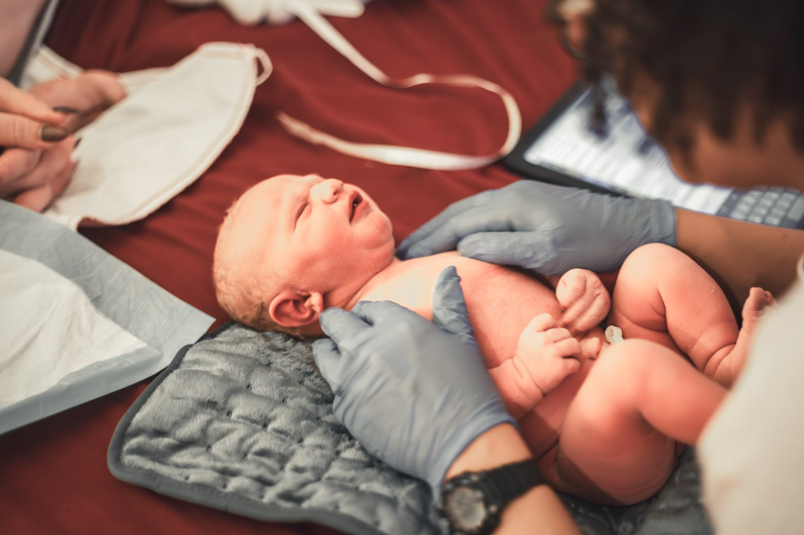
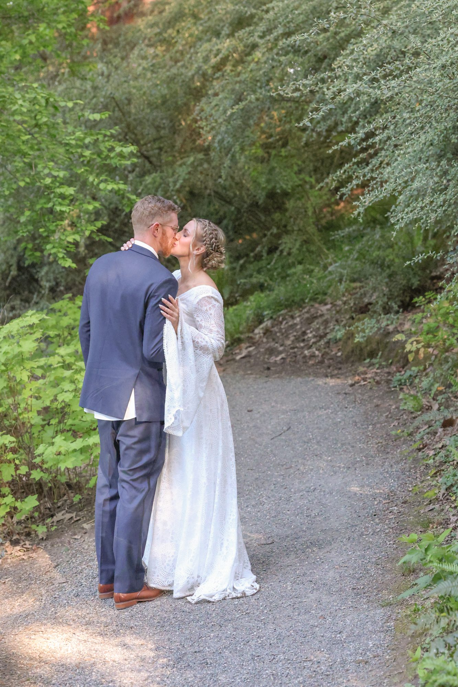
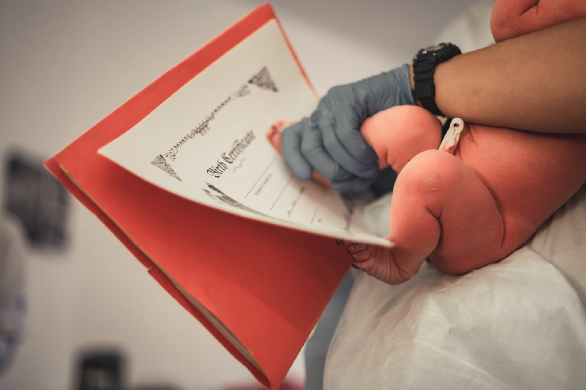
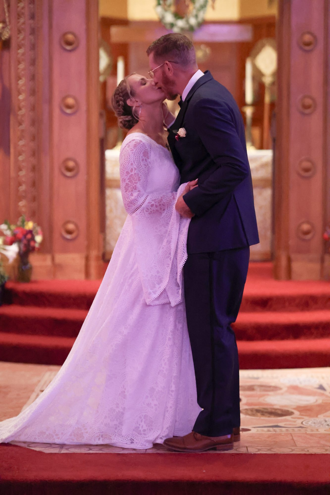
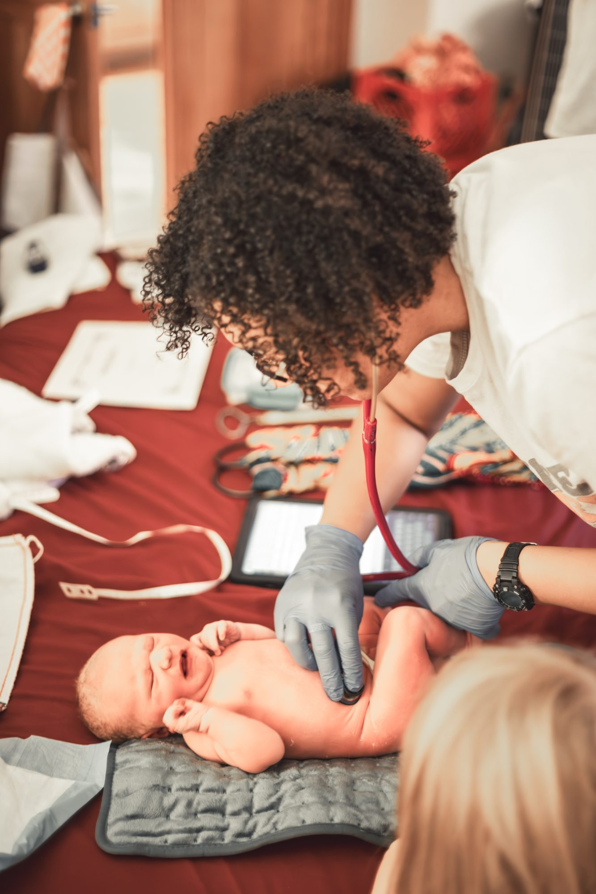
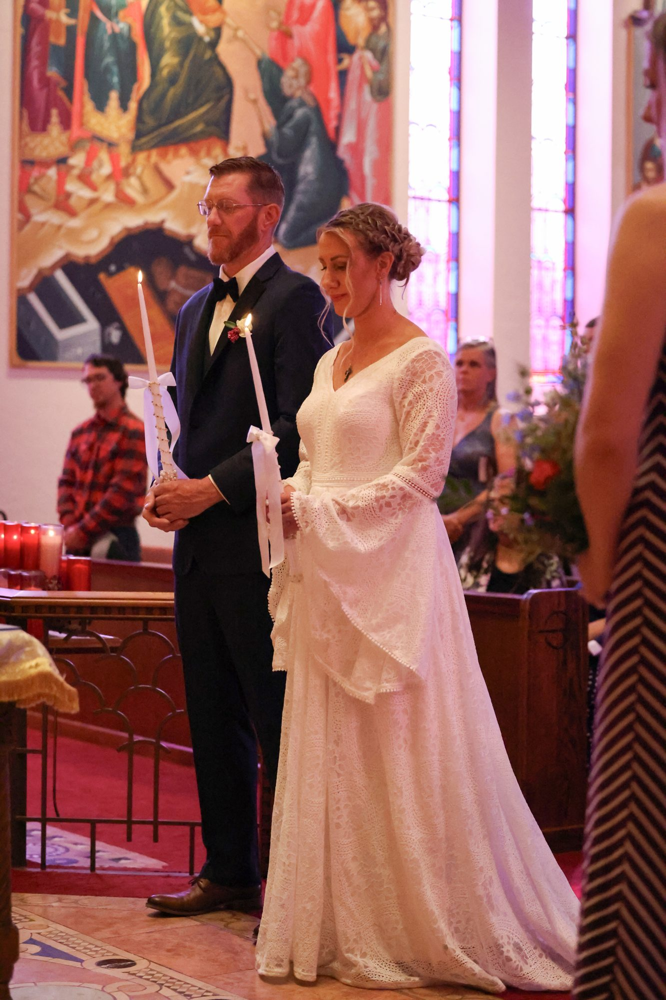

Birth Photography
A calm, unobtrusive presence in the room, documenting your baby's arrival so you can stay in the moment.
Pricing TBA
Birth & Portrait Photography · Central Oregon
Relaxed, natural photographs of the people and seasons that matter most to you.


About
I'm a birth and portrait photographer, and I love capturing people as they really are — whether that's the first moments with a new baby, a family laughing together, or a quiet portrait that shows who you are right now.
My style is relaxed and natural. I want you to feel comfortable in front of the camera, so there are no stiff poses or forced smiles — just connection, emotion, and the small details that make your story yours.
Life moves quickly, and the seasons we're in don't last forever. My goal is to give you photographs you'll treasure for years — images that bring back not just how a moment looked, but how it felt.
Whether you're welcoming a new baby, celebrating your family, or simply want beautiful portraits of yourself, I'd love to work with you.
Services
Gallery






Let's work together
Serving families throughout Central Oregon. Reach out to check availability or ask any questions — I'd love to hear from you.